A benchmark for testing quantum computers with Clifford+T hardware
We provide a quantum algorithm that can be used to benchmark quantum computers with Clifford+T hardware and provide a proof of the algorithm using ZX-calculus.
algorithms
quantum computing
zx calculus
benchmarking
python
Author
Salman Faris
Published
August 5, 2024
I was revisiting some of my MSc stuff from two years ago and I came across one of my original work in Quantum Processes and Computations (QPC). It was one of the funner courses I took – I had a genuine interest in the hype behind quantum computing at the time and the prerequisite for the course was just simple linear algebra. Aleks Kissinger taught the course and he’s incredibly passionate about the subject and is also a good explainer. He was also the one who interviewed me to get into the program where he randomly asked me about my favourite theorem in Galois Theory, really peeking my interest to the point of “what the heck are they cooking in the quantum computing group” but that’s another story.
In QPC, a part of the take-home “exam” was to produce anything interesting using the ZX-calculus. Bonus points if it’s original, has a strong motivation and/or has a rigorous proof. “Original” here was a bit vague in the sense that various parts can be original – the idea, implementation, proof, etc. I remember just spending several days trying to figure out what to do — really went deep into theorems in number theory, for example, and I manage to land on something original and provided a working proof, but not so much on good motivation I confess. Ultimately, I decided to keep it simple and build on a Fibonacci heuristic proposed in (Gilliam, Pistoia, and Gonciulea 2020), where I modified the routine they wrote, implemented it in the ZX-calculus and proved that the algorithm is correct. The routine relies solely on Clifford+T gates and because of the simplicity of the Fibonacci algorithm (as we shall see), it ought to serve as a good benchmarking tool for quantum computers with hardware that accepts only Clifford+T gates.
Before I go any further, I have to warn you that this is neither an introduction to quantum computing nor ZX-calculus. What I can tell you is that ZX-calculus gives you superpowers for reasoning in quantum computing. If you want a primer on both at the same time, check out (Coecke and Kissinger 2017) which is where I learnt all the basics from. Another good resource is John’s ZX-calculus primer ZX-calculus for the working quantum computer scientist. John van de Wetering is also one of the guys who taught QPC alongside Aleks. I realize that nowadays, there’s also less dense intros to the subject as well like this one at PennyLane.
What does combinatorics tells us about Fibonacci numbers?
Define a recurrence relation F_n = F_{n-1} + F_{n-2} with initial conditions F_0=1 and F_1 = 2 where n > 1. The positive integers F_n generated by this recurrence relation is universally known today as the Fibonacci sequence 1, 2, 3, 5, 8, 13, ... and so on. At this point, it is not straightforward how we can encode this relation into a quantum circuit. So how do we encode this information to perform quantum computation? If I learn anything from my short stint of constructing quantum algorithms, you can always end up with a working algorithm by converting the problem into a counting problem. If you have a counting problem, you can perform what is called heuristic encoding where you can design a quantum circuit that “generates” the things you want to count, run the circuit repeatedly for a sufficiently long period, and then count the number of measurement outcomes, possibly with some required classical post-processing.
For the Fibonacci numbers, combinatorics tells us that there is an equivalence between the Fibonacci numbers and the number of length n binary sequences with no consecutive ones where this equivalence is given as F_n = \left|B^n \right| where
B^n = \left\{ x \in \{0,1\}^n : x \text{ has no consecutive ones} \right\}.
With this formulation of the Fibonacci numbers, we now have a counting problem rather than a recurrence problem where we can perform heuristic encoding! So let’s now turn our attention to constructing a quantum routine that generates elements of B^n.
Building a quantum routine for generating elements of B^n
Let’s think about this from the ground up and consider n=2. How can we generate elements of B^2? Enumerating B^2 gives us the set
B^2 = \left\{ 00, 01, 10 \right\},
where it’s missing the sole binary sequence 11 \in \{ 0, 1\}^2. One way to think about this is to build a quantum routine that generates the outcomes \ket {00}, \ket {01}, \ket {10} but not \ket {10}. To achieve this, you want a 2-qubit system such that
qubit 1 admits equal superposition when measured; but
qubit 2 to be in equal superposition only if the first qubit is in the state \ket {0}.
An easy way to do this is to use two X_{\pi/2} rotation gates together with a single CX_{\pi/2} controlled rotation gate where X_{\pi/2} is a 2x2 matrix given by
to see that we indeed have a quantum state that yields binary sequences in B^2. Here, \otimes is the Kronecker product induced by the tensor product of linear maps. If you are lazy, you can skip the sanity check as we are going to prove this using ZX-calculus next anyways which will be much simpler and more elegant, especially for the general case.
Now we go to n=3 and enumerate B^3. Here we have the set
B^3 = \left\{ 000, 001, 010, 100, 101 \right\},
where it’s missing the binary sequences 110 and 111 that has two and three consecutive ones respectively. As before, think about state outcomes. It is slightly complicated as you now have 2^3 potential outcomes. However, if you think inductively, there is a pattern here. In this case, we now want
qubit 1 to be in equal superposition;
qubit 2 to be in equal superposition only if qubit 1 is in the state \ket {0}; and
qubit 3 to be in equal superposition only if qubit 2 is in the state \ket {0}.
In this case, we end up with outcomes exactly as in B^3. Observe that the control on qubit 3 is dependent only on the measurement of qubit 2. This means that we can reuse the same principle we had in the case of n=2. In fact, we can simply extend the previous routine by introducing an X_{\pi/2} rotation gate on qubit 3 and a single CX_{\pi/2} controlled rotation gate which conditions on qubit 2.
Further observe that qubit 2 is dependent only on the measurement of qubit 1. Thus going from the n=2 case to n=3 is simply extending qubit 3 with 2 new rotation gates. It should be clear that we can reuse this same principle to go from n=3 to n=4 and so on; so we conjecture the following:
Conjecture: For n > 1, B^n can be generated by an n-bit quantum routine that performs X_{\pi/2} rotation gates to all qubits n and then applying n-1 controlled rotation gates CX_{\pi/2} such that the jth controlled rotation gate conditions on qubit j-1 for j > 2.
So how do we go about proving this conjecture? Well, it’s time to turn to ZX-calculus.
Fibonacci in the ZX-calculus
A short note before we proceed. It has been incredibly hard to embed tikz files (which I originally wrote all my ZX diagrams in) into a HTML format, so I will be taking screenshots from my original solution for my sanity – I’ve already wasted 3 hours trying, please believe me. I hate low quality screenshots as well so if you have an elegant solution on how to do this, please let me know.
I claim that the following ZXFibo algorithm is a working n-bit quantum routine that generates B^n for n > 1, and hence the Fibonacci sequence F_n.
Algorithm. ZXFibo
Given. An integer n > 1, for the Fibonacci number F_n to be computed.
Perform.
where the process \widehat{f_n} is given by
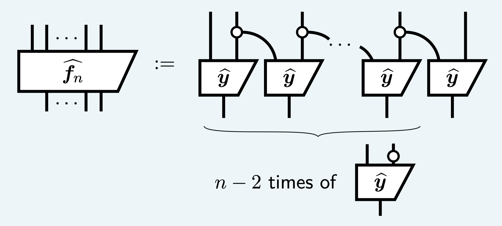
where
is called the y-box (since it topologically looks like a Y, sorry I’m clearly not creative with my naming).
Measuring this circuit yields an outcome of 0 up to a number for Z-measurement outcomes \ket {k_1 \ldots k_n} with consecutive ones and not 0 (up to a number) otherwise.
It shouldn’t be too difficult to see that the process \widehat{f_n} given above is indeed equivalent to spamming X_{\pi/2} rotations and putting a control CX_{\pi/2} gate on each qubit. But if you’re not convinced or your ZX-calculus is rusty, I’ll probably do it as an appendix at some point. What’s important, however, is to recognize that the process only uses Clifford+T gates.
Now, let’s prove that the ZXFibo algorithm is correct. It’s a counting algorithm, so naturally we prove by induction on n. But before we start, let’s recall some of the spider rules in ZX-calculus. Core to this proof are the copy rule(c), commute rule(\pi) and the eliminate rule(e) given below:
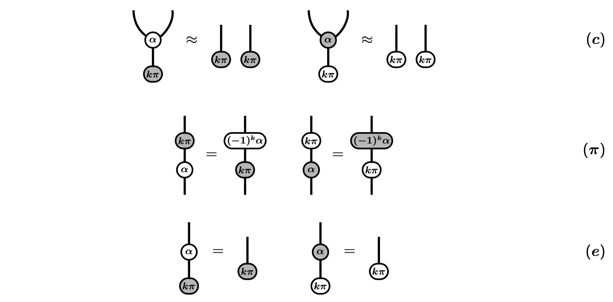
The commute rule is especially used when k = 0. We can also combine the commute rule, the eliminate rule and phase spider fusion to arrive at what I like to call the (\alpha \pi) rule:
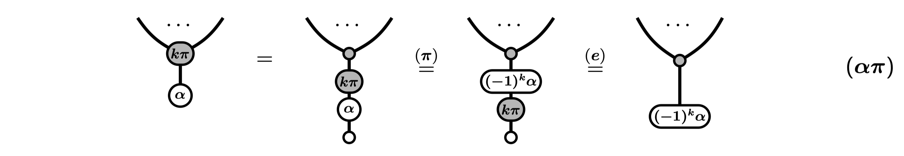
The (\alpha \pi) rule is an important one and we will be using it several times in our correctness proof of ZXFibo. With these rules refreshed, we are ready to prove the base case.
Base case. For n=2, just using definitions of \widehat{f_2} and the y-box \widehat{y}, and using phase spider fusion, we get
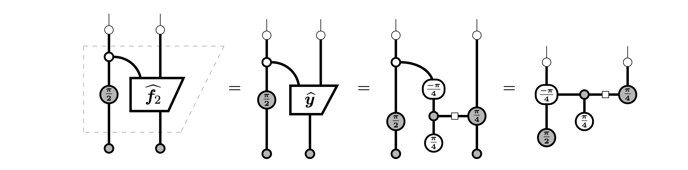
We can then look at individual measurement outcomes. For k, \ell \in \{0, 1\} we have
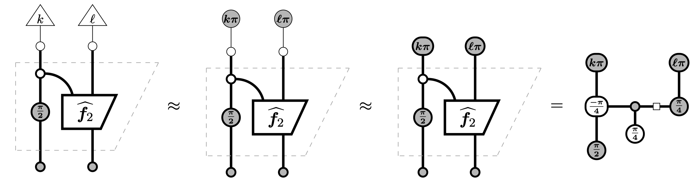
Then using spider fusion, the colour change rule and the copy rule, we end up with
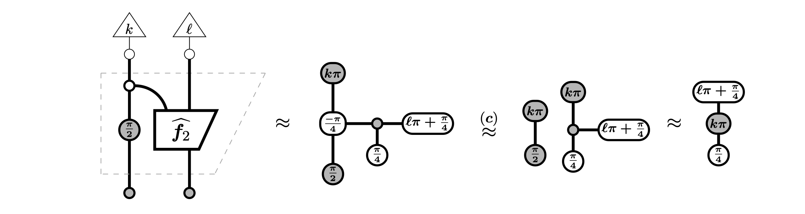
We can now apply the (\alpha \pi) rule to end up with
From here, we can evaluate each pair (k, \ell) separately. Recall what these spiders actually mean – the representation of an undoubled phase state \alpha \in \mathbb{C}^2 is given by the matrix
where the phase effect version is simply attained by taking the adjoint of the phase state matrix. This implies that
Consequently, the undoubled number
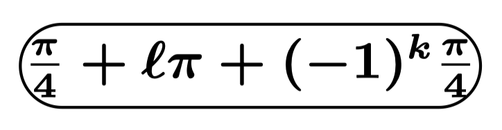
can be tabulated into the following table of numbers and their corresponding complex amplitudes
In particular the measurement outcome pair (k, \ell) = (1, 1) attains a zero complex amplitude. Moreover, where k and \ell are not both 1, the amplitude is nonzero. This is exactly what we want and so completes the base case. In fact, you can actually get the actual probabilities pretty easily from here, but we leave it as an exercise for the reader.
Exercise. Show that the actual probabilities for each measurement outcome are tabulated as follows: Hint: look at the complex amplitudes of the doubled version.
Inductive step. Now suppose that the ZXFibo algorithm is correct for all 2 \leq n < N + 1. Then for n = N+1, we can look at individual measurement outcomes k_1, \ldots, k_{N+1} \in \{0, 1\} to have
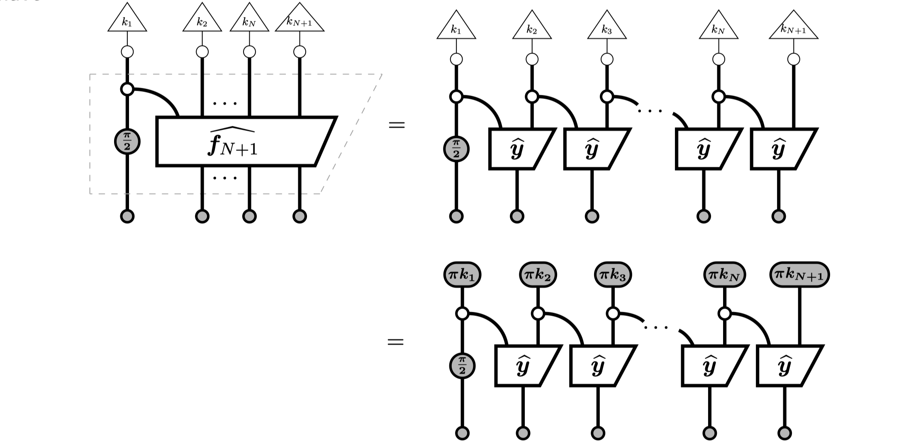
We can apply the copy rule on the N-th measurement so that we have
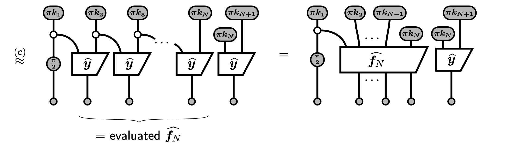
The inductive hypothesis takes care of the evaluated \widehat{f_N}, so we know that it will not be 0 up to a number for Z-measurement outcomes \ket {k_1 \ldots k_N} with no consecutive ones. So now we focus on the rightmost y-box. To complete the inductive step, we just need to prove that if k_N = k_{N+1} = 1, then the y-box evaluates to 0, and not 0 otherwise.
Using the y-box definition, applying phase spider fusion and using the colour change rule, we have
We can then apply the eliminate rule and the (\alpha \pi) rule to further obtain
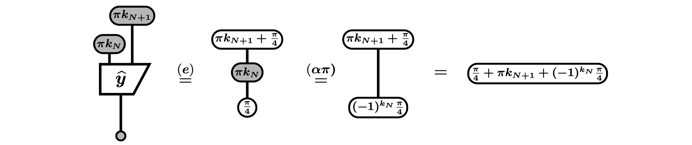
This number is exactly what we had before with \ell = k_{N+1} and k = k_N. Thus by using the same logic as we did before, we can conclude that the pair (k_N, k_{N+1}) = (1, 1) which gives the only remaining measurement outcome with consecutive ones will evaluate the whole diagram to 0 (up to a number) and not 0 otherwise. This completes the inductive step and the correctness proof of the ZXFibo algorithm. As a bonus, we have also implicitly proven that the algorithm terminates for all qubits n > 1. \blacksquare
ZXFibo on an IBM quantum computer
Now that we have proven the correctness of the ZXFibo algorithm, let’s see how it performs on an IBM quantum computer simulator. We will implement ZXFibo using the IBM Qiskit library (Javadi-Abhari et al. 2024) and the PyZX library (Kissinger and Wetering 2020) which we import below.
Figure 1: ZXFibo for n=2 in its PyZX and Qiskit circuit representation.
Using the Qiskit API, we can then run ZXFibo using an IBM backend. To not spend any money, I will be running the algorithm on a non-noisy simulator where we can get ideal counts (suppressing probability 0 events) and on a noisy simulator. For the noisy simulator, I will be using the the FakeAthens backend, which is a 5 qubit fake backend that mimics the IBM Athens device.
Figure 2: Simulation results for ZXFibo with n=2 using the IBM backend with 1000 shots.
From the simulation results for n=2, we can see that the algorithm works as expected. In fact, it works too well. On the non-noisy simulator, the histogram depicts exactly the probabilities of 0.25, 0.25, 0.5 for the pairs (0, 0), (0, 1) and (1, 0) respectively. On the noisy simulator otoh, we attain a similar distribution but with ~0.5% noise in the (1, 1) measurement outcome which is tiny relative to the minimum probability for the measurement outcomes with non-consecutive ones of 25%. Setting a 5% threshold in post-processing discards the 0.5% noise and gives us the correct distribution and yields B^2. We then obtain F_2 as |B^2|.
We repeat the experiment by running 1000 shots of the ZXFibo algorithm but now with n=3.
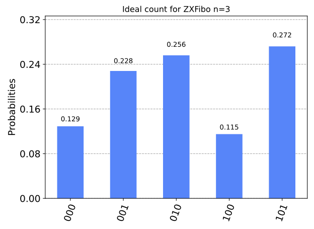
(a) Ideal counts
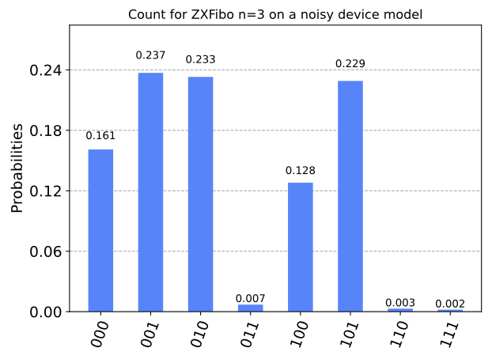
(b) Counts on a noisy simulator
Figure 3: Simulation results for ZXFibo with n=3 using the IBM backend with 1000 shots.
We see again that the ZXFibo algorithm works extremely well! The noisy measurement outcomes (i.e. with consecutive ones) accounts for only about 1% of the total probabilities with a single sequence attaining a maximum of only 0.7%. This number is significantly tiny compared to the minimum probability for elements in B^3 of 12.5%. We can again set a 5% threshold in post-processing to get the correct probability distribution and obtain F_3.
Let’s now fire 1000 shots of ZXFibo with n=5 to compute the Fibonacci number F_5.
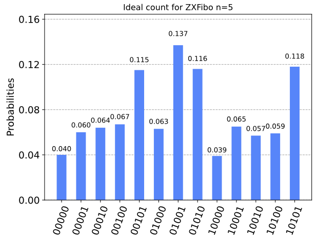
(a) Ideal counts
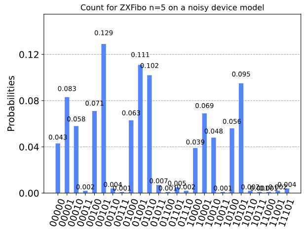
(b) Counts on a noisy simulator
Figure 4: Simulation results for ZXFibo with n=5 using the IBM backend with 1000 shots.
Again, ZXFibo works really well where the noisy measurement outcomes attains less than 1% in probability on average. But we can now start to see an impending doom… the minimum probability for elements in B^5 is now 3.9%. This is still significantly larger than the maximum attained by the noisy measurement outcome of 0.7% but we can no longer set a 5% threshold in post-processing. Rather, we need to choose a safer threshold, say, at about 2.5% to discard the noisy outcomes and obtain F_5 with confidence. This phenomenon can seem problematic as we increase n so let’s discuss a bit more about it.
An impending doom
Because this is a heuristic approach, we have no reason to conclude that the maximum attained by the noisy measurement outcomes will exceed beyond 1% as we have seen this is not the case even for increasing n = 2, 3, 5. The only way to verify this is to run more experiments with higher number of qubits. However, the doom pattern that we can clearly see is that as n increases, the minimum probability for elements in B^n decreases. This means that the threshold for discarding the noisy measurement outcomes will have to be set lower and lower, and might eventually reach a point where the threshold is lower than the maximum attained by the noisy measurement outcomes. What is this breaking point though?
Fix n > 1 and define p_{\mathrm{min}} be the expected probability for the element B^n with lowest probability (relative to other elements in B^n). Assume an error of \varepsilon > 0 on p_{\mathrm{min}}. Suppose the error arising from the noisy measurement outcomes is \delta \approx 0. Then a reasonable post-processing probability threshold \tau for discarding noisy outcomes should satisfy \delta < \tau < p_{\mathrm{min}} - \varepsilon. The problem is that the Fibonacci sequence F_n behaves like an exponential function, which equivalently means that the number of elements in B^n increases exponentially with n. This implies that p_{\mathrm{min}} will decrease exponentially fast as n increases! Obviously, if \delta < p_{\mathrm{min}} - \varepsilon, then we can always take the midpoint
to be the count threshold. However, the impending doom is when p_{\mathrm{min}} - \varepsilon \approx \delta for some sufficiently large N. In this case, there does not exist a stable count threshold \tau for any n > N + 1 as for n = N, we have
So if we are serious in counting large Fibonacci numbers, we ought to think of a better algorithm and this opens room for further research. For our purpose, however, we just want a benchmark for running Clifford+T hardware. This heuristic is excellent in doing exactly that, especially as per our discussion, for benchmarking how noisy a quantum computer is by looking at the noisy measurement outcomes. In fact, one can use the probability threshold \tau above as a metric to measure the noise levels.
References
Coecke, Bob, and Aleks Kissinger. 2017. Picturing Quantum Processes: A First Course in Quantum Theory and Diagrammatic Reasoning. Cambridge University Press.
Gilliam, Austin, Marco Pistoia, and Constantin Gonciulea. 2020. “Canonical Construction of Quantum Oracles.”ArXiv abs/2006.10656.
Javadi-Abhari, Ali, Matthew Treinish, Kevin Krsulich, Christopher J. Wood, Jake Lishman, Julien Gacon, Simon Martiel, et al. 2024. “Quantum Computing with Qiskit.”https://doi.org/10.48550/arXiv.2405.08810.
Kissinger, Aleks, and John van de Wetering. 2020. “PyZX: Large Scale Automated Diagrammatic Reasoning.” In Proceedings 16th International Conference on Quantum Physics and Logic, Chapman University, Orange, CA, USA., 10-14 June 2019, edited by Bob Coecke and Matthew Leifer, 318:229–41. Electronic Proceedings in Theoretical Computer Science. Open Publishing Association. https://doi.org/10.4204/EPTCS.318.14.